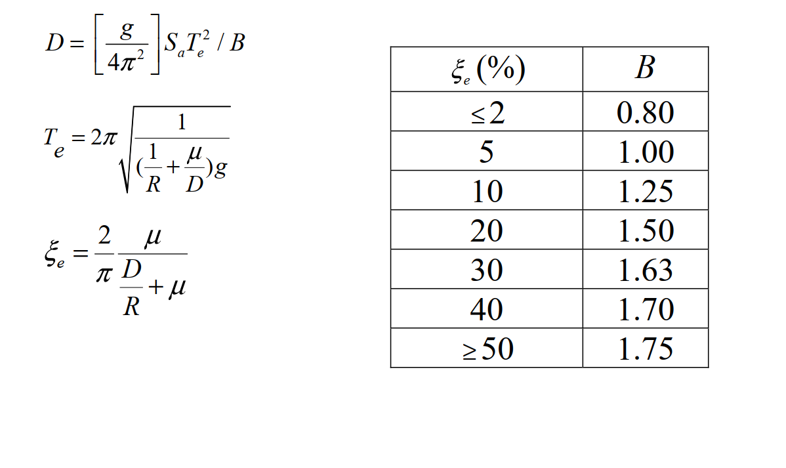

考題編號：SD-2018-4
主分類： SD-U3-2 隔減震原理
副分類： SD-U2-2 建築耐震設計規範
分析方法： 隔震系統等效線性化分析（摩擦單擺支承 FPS）
標籤： 摩擦單擺支承 FPS 隔震設計 等效週期 等效阻尼比 設計位移 傳遞加速度 曲率半徑 摩擦係數 阻尼修正係數B 迭代設計
1. 原始題目重述 (Problem Restatement)

圖說：提示公式：(1) $D = [g/(4\pi^2)]\,S_a T_e^2/B$；(2) $T_e = 2\pi\sqrt{1/[(1/R+\mu/D)g]}$；(3) $\xi_e = (2/\pi)\,\mu/(D/R+\mu)$。ξe-B 對照表：≤2%→0.80；5%→1.00；10%→1.25；20%→1.50；30%→1.63；40%→1.70；≥50%→1.75。
結構與設計條件
- 上部結構：假設為剛體
- 設計水平譜加速度係數：$S_a = 0.48/T \leq 0.8$（T 為結構週期，秒）
- 設計位移：$D = 25$ cm
- 傳遞設計水平加速度：$A = 0.08\,g$
- 重力加速度：$g = 980$ cm/s²
- 隔震系統：摩擦單擺支承（Friction Pendulum Bearing，FPS）
求解目標
$$\text{求：隔震支承之曲率半徑 } R \text{ 及摩擦係數 } \mu$$
2. 考題核心精神與出題者意圖 (Core Concepts & Examiner's Intent)
核心觀念：
- FPS 的力學原理：恢復力來自單擺效應（$W \cdot D/R$）＋摩擦力（$\mu W$），傳遞加速度 $A = D/R + \mu$。
- 等效線性化：以等效週期 $T_e$ 和等效阻尼比 $\xi_e$ 代替非線性 FPS 的動力特性。
- 兩個設計目標（$D$ 與 $A$）提供兩個方程式，聯立求解 $R$ 與 $\mu$；但需先透過 $D$ 公式確定 $B$，再由 $B$ 反查 $\xi_e$，進而分離 $\mu$ 與 $R$。
出題意圖：
- 測驗 FPS 力學特性的理解（傳遞加速度的物理意義）。
- 測驗隔震等效線性化三公式的綜合應用。
- 測驗反應譜區段判斷（$T_e$ 夠長，必在 $1/T$ 段）。
- 測驗從 $B$ 表格插值 $\xi_e$，再反推 $\mu$、$R$ 的計算流程。
3. 解題戰略地圖與陷阱分析 (Strategic Roadmap & Trap Analysis)
作戰順序（關鍵洞察：A 決定 $T_e$，$D$ 決定 $B$）：
- 建立傳遞加速度方程：$D/R + \mu = A = 0.08$（Eq.I）
- 由 Eq.I 得 $(1/R + \mu/D) = A/D$ → 代入 $T_e$ 公式，求得 $T_e$
- 確認反應譜區段，代入 $D$ 公式，計算 $B$
- 由 $B$ 插值查表得 $\xi_e$
- 由 $\xi_e$ 公式配合 Eq.I 解出 $\mu$
- 由 Eq.I 解出 $R$
陷阱清單：
| # | 陷阱 | 正確做法 |
|---|---|---|
| ★★★ | 不知道 $A = D/R + \mu$ 的來源，無法建立 Eq.I | FPS 最大傳遞力 $= W(D/R + \mu)$，除以 $W$ 得傳遞加速度係數 $A$ |
| ★★ | 以為 $T_e$ 需迭代才能求 | 一旦利用 Eq.I，$(1/R + \mu/D) = A/D$ 已知 → $T_e = 2\pi\sqrt{D/(Ag)}$ 直接算出 |
| ★★ | 反應譜區段判斷錯誤（用 $S_a = 0.8$） | $T_e \approx 3.55$ s $\gg$ 0.6 s（$1/T$ 段），須用 $S_a = 0.48/T_e$ |
| ★ | 由 $B$ 查表直接取最近值而不插值 | 應在 30%（B=1.63）與 40%（B=1.70）間線性插值 |
3.5 變數層次分析 (Variable Hierarchy Analysis)
最終目標
求 FPS 曲率半徑 R（m）及摩擦係數 μ（無因次）
本題關鍵公式（依計算順序）
$$\text{Step 1（Eq.I）: } \frac{D}{R} + \mu = A \quad \Rightarrow \quad \frac{1}{R} + \frac{\mu}{D} = \frac{A}{D}$$
$$\text{Step 2: } T_e = 2\pi\sqrt{\frac{D}{A \cdot g}}$$
$$\text{Step 3: } S_a = \frac{0.48}{\boxed{T_e}} \quad (T_e \gg 0.6 \text{ s})$$
$$\text{Step 4: } B = \frac{g}{4\pi^2} \cdot \frac{\boxed{S_a} \cdot \boxed{T_e}^2}{D} = \frac{0.48\,g\,\boxed{T_e}}{4\pi^2 D}$$
$$\text{Step 5: } \xi_e = \text{table}^{-1}(\boxed{B}) \quad \text{（插值）}$$
$$\text{Step 6: } \xi_e = \frac{2}{\pi} \cdot \frac{\mu}{A} \quad \Rightarrow \quad \mu = \frac{\pi A \boxed{\xi_e}}{2}$$
$$\text{Step 7: } R = \frac{D}{A - \boxed{\mu}}$$
L1：題目直接給定
| 符號 | 數值 | 說明 |
|---|---|---|
| $D$ | 25 cm | 設計位移 |
| $A$ | 0.08 | 傳遞設計水平加速度係數（以 $g$ 為單位） |
| $g$ | 980 cm/s² | 重力加速度 |
| $S_a$ | $0.48/T$（$\leq 0.8$） | 設計加速度係數 |
L2：需知識點推導
| 步驟 | 符號 | 公式／來源 | 卡關? |
|---|---|---|---|
| 建立 Eq.I | $A = D/R + \mu$ | FPS 最大傳遞力除以 $W$ | |
| 求 $T_e$ | $T_e = 2\pi\sqrt{D/(Ag)}$ | 將 $(1/R+\mu/D)=A/D$ 代入 $T_e$ 公式 | |
| 判斷 Sa | $S_a = 0.48/T_e$ | $T_e \gg 0.6$ s，在 $1/T$ 段 | |
| 求 $B$ | $B = 0.48g T_e/(4\pi^2 D)$ | $D$ 公式整理 | |
| 插值 $\xi_e$ | 線性內插 | 在 B=1.63（30%）與 B=1.70（40%）間 | |
| 求 $\mu$ | $\mu = \pi A \xi_e/2$ | 由 $\xi_e$ 公式整理 | |
| 求 $R$ | $R = D/(A-\mu)$ | Eq.I 整理 |
L3：深層知識
| 知識點 | 說明 | 卡關? |
|---|---|---|
| FPS 傳遞加速度的物理意義 | FPS 峰值水平力 $= W(D/R + \mu)$：$W/R \times D$ 為單擺恢復力；$\mu W$ 為摩擦力。兩者在最大位移時同向（摩擦力尚未反向），故為最大傳遞力 | |
| 等效剛度 $K_{eff}$ | $K_{eff} = W/R + \mu W/D$，是線性化後的割線剛度。$T_e = 2\pi\sqrt{W/(K_{eff}g)}$ | |
| 等效阻尼比的能量解釋 | $\xi_e = W_D/(4\pi W_S)$；$W_D = 4\mu W D$（矩形遲滯迴圈能量）；$W_S = K_{eff}D^2/2$（彈性應變能） | |
| $B$ 係數修正 | $B = 1$ 對應 $\xi = 5\%$（基準阻尼）；$B > 1$ 表示高阻尼使位移反應縮小 |
4. 步驟化詳細計算過程 (Step-by-Step Detailed Calculation)
Step 1：建立傳遞加速度方程（Eq.I）
FPS 在設計位移 $D$ 時，對剛性上部結構的峰值水平傳遞力：
$$F_{\max} = \underbrace{\frac{W \cdot D}{R}}_{\text{單擺恢復力}} + \underbrace{\mu W}_{\text{摩擦力}}$$
傳遞設計水平加速度：
$$A = \frac{F_{\max}}{W} = \frac{D}{R} + \mu$$
代入已知 $A = 0.08$，$D = 25$ cm：
$$\boxed{\frac{D}{R} + \mu = 0.08} \quad \cdots \text{（Eq.I）}$$
由此得：
$$\frac{1}{R} + \frac{\mu}{D} = \frac{A}{D} = \frac{0.08}{25} = 0.0032 \text{ cm}^{-1}$$
策略註解：Eq.I 將 $R$ 與 $\mu$ 的乘積關係轉化為線性關係，是整題的突破口。關鍵在於認識到 $(1/R + \mu/D) = A/D$，使 $T_e$ 能直接計算。
Step 2：計算等效隔震週期 $T_e$
$$T_e = 2\pi\sqrt{\frac{1}{\left(\dfrac{1}{R} + \dfrac{\mu}{D}\right)g}} = 2\pi\sqrt{\frac{1}{A/D \cdot g}} = 2\pi\sqrt{\frac{D}{Ag}}$$
$$T_e = 2\pi\sqrt{\frac{25}{0.08 \times 980}} = 2\pi\sqrt{\frac{25}{78.4}} = 2\pi\sqrt{0.3189}$$
$$T_e = 2\pi \times 0.5647 = \mathbf{3.548 \text{ s}}$$
Step 3：確認反應譜區段並求 $S_a$
反應譜轉折點：$S_a = 0.8$ 時 $T^* = 0.48/0.8 = 0.6$ s
由於 $T_e = 3.548$ s $\gg$ 0.6 s，在速度控制（$1/T$）段：
$$S_a = \frac{0.48}{T_e} = \frac{0.48}{3.548} = 0.1353$$
Step 4：計算阻尼修正係數 $B$
代入設計位移公式：
$$D = \frac{g}{4\pi^2} \cdot S_a \cdot T_e^2 / B = \frac{g}{4\pi^2} \cdot \frac{0.48}{T_e} \cdot T_e^2 / B = \frac{0.48\,g\,T_e}{4\pi^2\,B}$$
解出 $B$：
$$B = \frac{0.48 \times g \times T_e}{4\pi^2 \times D} = \frac{0.48 \times 980 \times 3.548}{4\pi^2 \times 25}$$
$$= \frac{470.4 \times 3.548}{986.96} = \frac{1668.6}{986.96} = \mathbf{1.690}$$
Step 5：插值求等效阻尼比 $\xi_e$
查 $\xi_e$–$B$ 對照表，$B = 1.690$ 介於：
| $\xi_e$ | $B$ |
|---|---|
| 30% | 1.63 |
| 1.690 | ? |
| 40% | 1.70 |
線性內插：
$$\xi_e = 30\% + (40\% - 30\%) \times \frac{1.690 - 1.63}{1.70 - 1.63} = 30\% + 10\% \times \frac{0.060}{0.070}$$
$$\xi_e = 30\% + 8.57\% \approx \mathbf{38.6\%}$$
Step 6：求摩擦係數 $\mu$
由 $\xi_e$ 公式整理：
$$\xi_e = \frac{2}{\pi} \cdot \frac{\mu}{D/R + \mu} = \frac{2\mu}{\pi \cdot A}$$
$$\mu = \frac{\pi \cdot A \cdot \xi_e}{2} = \frac{\pi \times 0.08 \times 0.386}{2} = \frac{0.08 \times 0.386\pi}{2}$$
$$\mu = \frac{0.09702}{2} = 0.04851$$
$$\boxed{\mu \approx 0.049 \quad (\approx 4.9\%)}$$
Step 7：求曲率半徑 $R$
由 Eq.I：
$$\frac{D}{R} = A - \mu = 0.08 - 0.049 = 0.031$$
$$R = \frac{D}{0.031} = \frac{25 \text{ cm}}{0.031} = 806 \text{ cm}$$
$$\boxed{R \approx 8.0 \text{ m}}$$
驗算
| 驗算項目 | 計算 | 目標值 |
|---|---|---|
| $D/R + \mu$ | $25/806 + 0.049 = 0.031 + 0.049 = 0.080$ | $A = 0.08$ ✓ |
| $\xi_e$ | $2/(π) \times 0.049/0.08 = 0.3891 \approx 39\%$ | 與插值一致 ✓ |
| $T_e$ | $2\pi\sqrt{25/(0.08 \times 980)} = 3.548$ s | — |
| $D$ | $0.48 \times 980 \times 3.548/(4\pi^2 \times 1.690) = 25.0$ cm | $D = 25$ cm ✓ |
5. 關鍵爭議點與進階探討 (Critical Issues & Advanced Discussion)
爭議一：傳遞加速度的確切定義
$A = D/R + \mu$ 代表 FPS 在最大位移 $D$ 時的峰值傳遞加速度。注意此時摩擦力與恢復力同向（在加載方向的最末端，速度趨近於零但摩擦力尚未反向）。如果定義「有效傳遞力」為有效剛度乘以位移：$K_{eff} D = W(1/R + \mu/D) D = W(D/R + \mu)$，結果相同——本質上是同一力。
爭議二：$B$ 插值 vs 直接取最近值
嚴格計算應插值（$\xi_e \approx 38.6\%$），但考場上若時間有限，取最近表格值（$\xi_e = 40\%$, $B = 1.70$）計算出 $\mu \approx 0.0503$, $R \approx 8.4$ m，與精確解差異約 5%，工程上可接受。建議考場中先插值，若時間不足再取最近值並說明近似。
FPS 與 LRB 的設計邏輯對比
| 特性 | FPS（摩擦單擺） | LRB（鉛芯橡膠） |
|---|---|---|
| 恢復力來源 | 單擺幾何（重力） | 橡膠層彈性 |
| 設計自由度 | $R$（週期）、$\mu$（阻尼） | 橡膠勁度、鉛芯尺寸 |
| 週期與位移關係 | $T_e \propto \sqrt{R}$，與 $W$ 無關 | $T_e$ 取決於橡膠剪切模量與尺寸 |
| 自我定心 | 良好（重力驅動） | 視設計而定 |
進階：FPS 的最優設計（$R$、$\mu$ 的權衡）
從 Eq.I：$D/R + \mu = A$（常數），增大 $R$ 則 $\mu$ 相應增大，反之亦然。
- 大 $R$（長週期）：$T_e$ 增大，反應譜位移 $D$ 增大，隔震效果好但位移需求大。
- 大 $\mu$（強摩擦）：能量消散多，$\xi_e$ 大，$B$ 大，位移 $D$ 縮小——但傳遞加速度中摩擦成分大，對輕重量結構不利。
最佳化設計需在 $R$-$\mu$ 空間中尋找滿足位移限制與加速度限制的平衡點，本題的 $(R \approx 8.0\text{ m},\, \mu \approx 0.049)$ 即為此設計目標下的最優解。